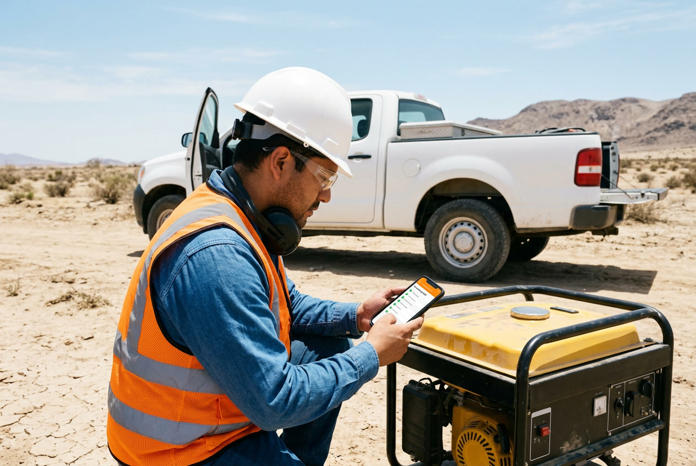
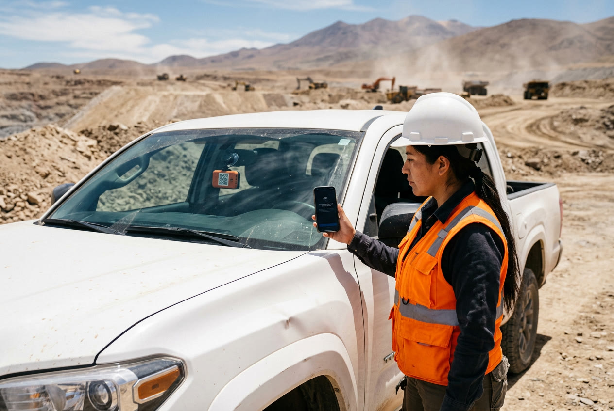
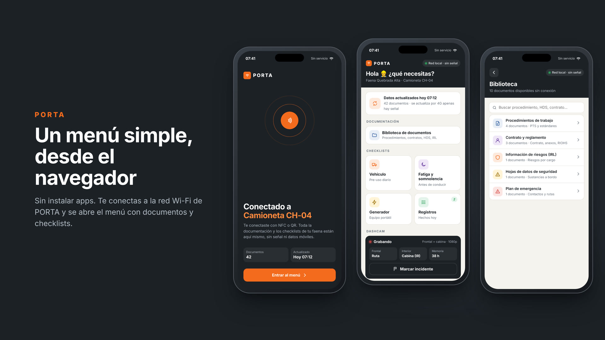
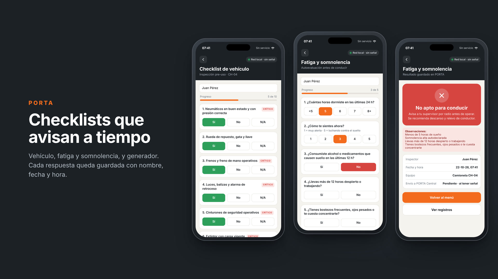
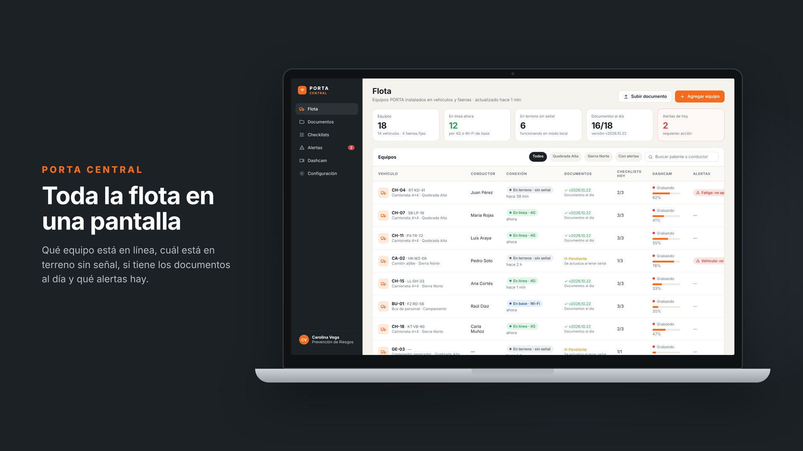
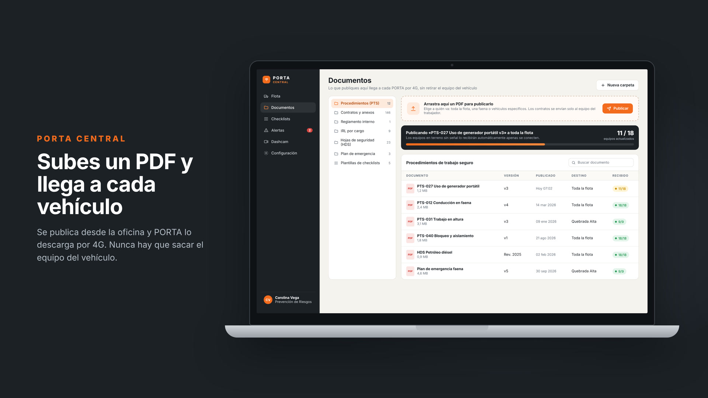
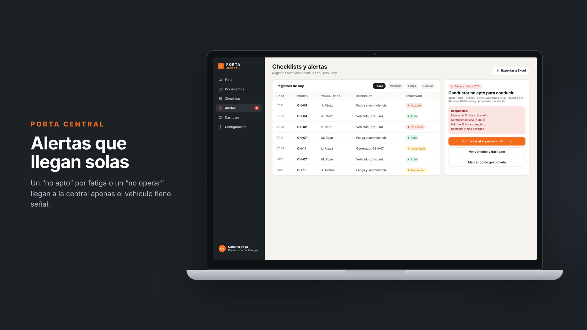
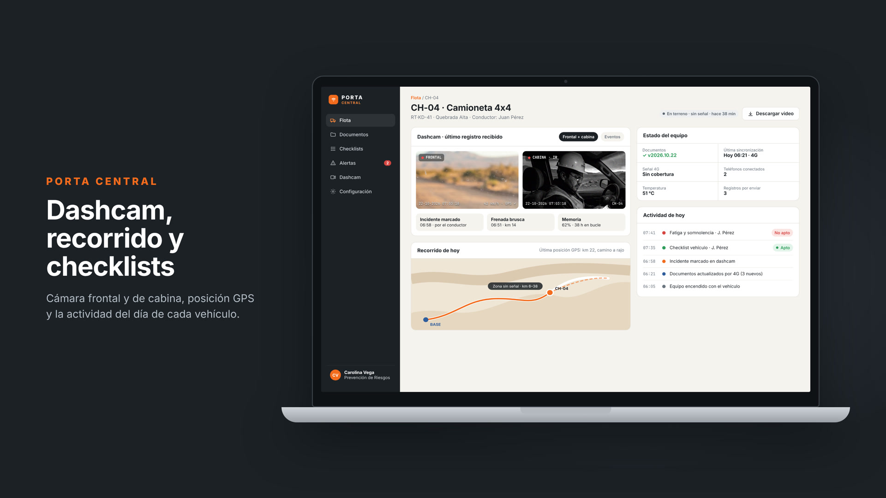
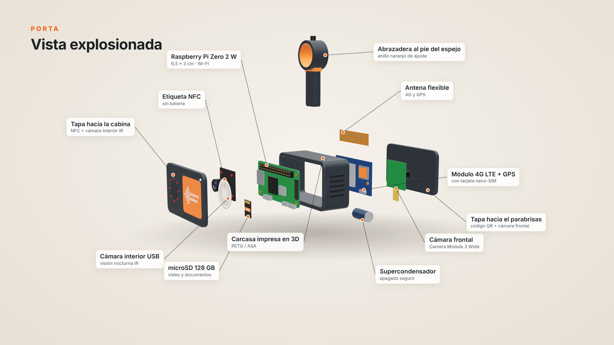

Documentación, checklists y dashcam. Siempre a bordo, aunque no haya señal.
Un equipo más pequeño que un teléfono que va bajo el espejo retrovisor. Guarda los procedimientos y contratos, crea su propia red Wi-Fi para consultarlos desde cualquier celular, graba la ruta y la cabina, y se actualiza solo por 4G desde la oficina.
01 · El problema
En terreno, la información está lejos justo cuando más se necesita
Gran parte del trabajo en minería, construcción, energía y transporte ocurre donde no hay cobertura celular. Ahí, la documentación que exige la prevención de riesgos suele estar en una carpeta de papel o en una nube a la que no se puede entrar.

Imagen referencial generada con IA: inspección de un generador en una faena sin señal.
Documentos que no están
Procedimientos desactualizados, carpetas incompletas, contratos y hojas de datos de seguridad (HDS) que quedaron en la oficina.
Sin señal, sin nube
Google Drive, correos y apps en línea no funcionan sin internet. El trabajador no puede consultar ni registrar nada.
Checklists en papel
Se mojan, se pierden, se llenan “al final del día” y llegan tarde a la oficina. Nadie los revisa a tiempo.
Riesgos e incidentes sin registro
Un conductor con fatiga sale igual a la ruta, y cuando ocurre un incidente no hay imágenes para investigar qué pasó.
PORTA2
02 · La solución
PORTA: computador y dashcam en un equipo más pequeño que un teléfono
PORTA va pegado al parabrisas, justo bajo el espejo retrovisor, como una dashcam. Por dentro tiene un mini computador Raspberry Pi, dos cámaras y un chip 4G. La carcasa se fabrica con impresión 3D.

Render 3D: PORTA montado bajo el espejo retrovisor.
Se actualiza solo
Por 4G recibe lo que se publica en la oficina. Nunca hay que sacarlo del vehículo.
Funciona sin señal
En terreno crea su propia red Wi-Fi con los documentos y checklists.
QR y NFC
QR hacia afuera, NFC hacia adentro: se entra desde el navegador sin instalar nada.
Dashcam doble
Graba la ruta y la cabina. Un botón guarda el video de un incidente.
PORTA3
03 · Cómo funciona
De la oficina al terreno, sin sacar nunca el equipo
1
Prevención publica desde la oficina
En el portal PORTA Central se sube un procedimiento, un contrato o una HDS, y se elige a qué vehículos va: toda la flota, una faena o uno solo.
2
PORTA lo recibe por 4G
Cada equipo tiene una SIM con datos. Apenas tiene cobertura, descarga lo nuevo; si está en terreno sin señal, lo hará en cuanto se conecte.
3
En terreno se convierte en “router”
PORTA enciende su propia red Wi-Fi (por ejemplo PORTA-CH04). Funciona con la batería del vehículo, aunque no haya ninguna señal.
4
Se entra con QR o NFC
Desde afuera, se escanea el código QR a través del parabrisas. Desde adentro, se acerca el teléfono a la zona NFC. El menú se abre solo en el navegador.
5
Se consulta, se registra y se graba
El trabajador lee procedimientos y completa sus checklists. Mientras tanto, la dashcam graba la ruta y la cabina.
6
Apenas hay señal, todo llega a la central
Checklists, alertas (“no apto”, “no operar”) y videos de incidentes suben solos por 4G. El supervisor los ve en PORTA Central.

Imagen referencial generada con IA: escaneo del código QR de PORTA desde afuera del vehículo.
PORTA4
04 · El equipo
Dos caras: una mira al camino y la otra a la cabina
Cara al parabrisas HACIA AFUERA
- Cámara frontal gran angular: graba la ruta.
- Código QR visible desde fuera del vehículo: cualquiera que llegue a la camioneta se conecta sin abrir la puerta (por ejemplo, en una charla de seguridad).
Cara a la cabina HACIA ADENTRO
- Zona NFC “Acerca tu teléfono”: conexión con un toque.
- Cámara interior con luz infrarroja: graba también de noche.
- Mini pantalla con el nombre de la red y el estado de grabación.

Comparación de tamaño: PORTA mide aprox. 8,6 × 5,2 × 3 cm, más pequeño que un teléfono.
PORTA5
05 · Lo que ve el trabajador
Un menú simple en el navegador del teléfono
Botones grandes, pensado para usar con guantes y al sol. No hay que instalar ninguna aplicación ni gastar datos.

Mockup de la interfaz (prototipo funcional ya programado).
📁 Documentos
Procedimientos (PTS), contrato y reglamento interno (RIOHS), información de riesgos (IRL), hojas de seguridad (HDS) y plan de emergencia, con buscador.
✅ Checklists
Vehículo, fatiga y somnolencia, y generador. El resultado aparece al instante y queda guardado con nombre, fecha y hora.
🎥 Dashcam
Muestra que está grabando y tiene un botón “Marcar incidente”, que guarda el video del minuto anterior y posterior.
PORTA6
06 · Checklists incluidos
Detectar el riesgo antes de salir a operar

Vehículo (pre-uso)
Neumáticos, frenos, luces y baliza, cinturones, extintor vigente, botiquín, radio y documentos (permiso de circulación, revisión técnica, SOAP).
Fatiga y somnolencia
Horas de sueño, cómo se siente, consumo de alcohol o medicamentos, horas despierto y síntomas. Se responde antes de conducir.
Equipo: generador
Ventilación (monóxido de carbono), conexión a tierra, cables, protección diferencial, fugas, extintor cercano y protección auditiva.
Resultado tipo semáforo
AptoTodo conforme. Se guarda el registro y se puede operar.
Con observacionesFallas no críticas. Operar con precaución y reportar.
No apto / No operarÍtem crítico con falla o fatiga alta: se avisa al supervisor.
Los ítems críticos y los criterios de fatiga los define el área de prevención de cada empresa desde PORTA Central; los de esta propuesta son un ejemplo. Se pueden agregar más checklists (trabajo en altura, herramientas eléctricas, etc.).
PORTA7
07 · PORTA Central
El portal de administración de la flota
Desde un computador en la oficina, el área de prevención ve todos los equipos y les envía información por 4G.

Mockup de PORTA Central: lista de equipos, conexión, versión de documentos, dashcam y alertas.


Flota
Cada vehículo con su equipo: en línea por 4G, en terreno sin señal o en base. Si tiene los documentos al día y cuántos checklists hizo hoy.
Documentos
Se arrastra un PDF, se elige el destino y se publica. Se ve cuántos equipos ya lo recibieron (por ejemplo, 11 de 18).
Alertas
Un “no apto para conducir” llega apenas el vehículo tiene señal, con las respuestas y el botón para contactar al supervisor.
PORTA8
08 · Dashcam doble
Graba la ruta y la cabina, y ayuda a investigar incidentes

Mockup: detalle de un vehículo con cámara frontal, cámara de cabina (infrarroja), recorrido GPS y actividad del día.
Qué hace
- Graba en bucle: cuando la memoria se llena, borra lo más antiguo (unas 38 horas).
- Marcar incidente (botón físico o desde el teléfono) protege el video de ese momento.
- Detecta frenadas bruscas y guarda fecha, hora, velocidad y posición GPS.
- Los videos marcados se envían a PORTA Central por 4G; el resto se queda en el equipo.
Cámara interior: cómo usarla bien
Grabar a las personas exige cumplir reglas. La cámara de cabina debe estar informada a los trabajadores e incluida en el Reglamento Interno (RIOHS), con fines de seguridad (fatiga, incidentes) y no como control permanente de la persona, de acuerdo a lo que ha señalado la Dirección del Trabajo. El acceso a los videos debe ser limitado y respetar la ley de protección de datos personales.
Futuro: usar la cámara interior para detectar somnolencia en forma automática (requiere una versión con más capacidad de cómputo).
PORTA9
09 · Qué hay que comprar
Lista de materiales para un equipo
Componentes disponibles en tiendas de electrónica en Chile o en línea. Precios referenciales a octubre de 2026, en pesos chilenos; pueden variar.
| Componente | ¿Para qué sirve? | Precio aprox. |
|---|
| Raspberry Pi Zero 2 W (con pines)El “cerebro”: 6,5 × 3 cm, con Wi-Fi incorporado. | Guarda los documentos, crea la red y muestra el menú. | $28.000 |
| Cámara frontal: Camera Module 3 Wide | Graba la ruta en gran angular. | $45.000 |
| Cámara interior USB con luz infrarroja | Graba la cabina, también de noche. | $20.000 |
| Módulo 4G LTE con GPS + antena flexibleCon ranura para tarjeta SIM (nano). | Recibe documentos y envía registros sin sacar el equipo; da la ubicación. | $40.000 |
| Placa hub USB para Pi Zero | Conecta la cámara interior y el 4G. | $12.000 |
| microSD 128 GB “High Endurance” | Memoria resistente a grabación continua de video. | $22.000 |
| Kit de conexión 12 V → 5 V 3 A (a la caja de fusibles) | Alimentación oculta por el techo, se enciende con el vehículo. | $12.000 |
| Supercondensador / mini UPS | Al apagar el motor, da tiempo para guardar el video sin dañar la memoria. | $15.000 |
| Reloj RTC DS3231 | Fecha y hora correctas aunque no haya señal. | $4.000 |
| Mini pantalla OLED 0,91", LED y pulsador | Estado, red Wi-Fi y botón “marcar incidente”. | $6.000 |
| Etiquetas NFC NTAG215 + QR en vinilo | Conexión rápida desde adentro (NFC) y desde afuera (QR). | $6.000 |
| Carcasa impresa en 3D (PETG o ASA) + soporte con rótula y adhesivo 3M | Protege el equipo y lo fija bajo el retrovisor. | $15.000 |
| Cable flex de cámara, tornillos e insertos | Armado. | $5.000 |
| Total por equipo | | ≈ $230.000 |
| Plan de datos SIM (IoT / M2M)Costo mensual por equipo | Unos pocos GB al mes bastan para documentos, registros y videos marcados. | $3.000–6.000/mes |
| Servidor de PORTA CentralCosto mensual para toda la flota | Portal web y almacenamiento en la nube. | ≈ $10.000/mes |
Para una versión comercial se puede diseñar una placa a medida (por ejemplo, basada en un Raspberry Pi Compute Module) que integre todo y reduzca aún más el tamaño y el costo por unidad.
PORTA10
10 · La carcasa impresa en 3D
Diseñada para ir bajo el retrovisor

Vista explosionada: carcasa, Raspberry Pi Zero 2 W, cámaras, módulo 4G, memoria y etiqueta NFC.
Características
- Tamaño: aprox. 8,6 × 5,2 × 3 cm.
- Soporte con rótula y adhesivo 3M al parabrisas, como una dashcam. No tapa la visión del conductor.
- QR en la cara del parabrisas y NFC en la cara de la cabina.
- Ventilación lateral, ranura para SIM y memoria, y botón de incidente.
- Cable de energía oculto por el techo hasta la caja de fusibles.
- Color naranjo de seguridad: fácil de ver y de identificar.
¿Por qué PETG o ASA y no PLA?
Pegado al parabrisas, a pleno sol, el equipo puede superar los 60 °C. El PLA (el plástico más común de impresión 3D) se ablanda cerca de esa temperatura y la carcasa se deforma.
El PETG o el ASA resisten más calor y radiación UV. El archivo se puede imprimir en cualquier impresora 3D doméstica o en un servicio de impresión.
PORTA11
11 · Cómo está construido (el “stack”)
Las capas de PORTA, explicadas en simple
Todo el software del equipo es gratuito y de código abierto. En gris, el nombre técnico para quien quiera profundizar.
Hardware
Mini computador, dos cámaras, módulo 4G con GPS, memoria, pantallita, NFC y carcasa.Raspberry Pi Zero 2 W · Camera Module 3 Wide · cámara USB IR · LTE Cat-1 + GNSS · microSD · RTC · OLED · NTAG215
Sistema
El “Windows” del equipo, liviano y gratuito. Arranca solo al encender el vehículo, sin teclado ni pantalla.Raspberry Pi OS Lite (Linux) · servicios systemd
Conexión 4G
Usa la SIM para conectarse a internet cuando hay cobertura, y reporta la ubicación por GPS.ModemManager · gpsd
Sincronización
Un pequeño programa revisa si hay documentos nuevos en PORTA Central y los descarga; luego sube los checklists y alertas pendientes. Solo transfiere lo que cambió.agente Python · API HTTPS · rclone / rsync
Red Wi-Fi local
En terreno enciende su propia red con contraseña y hace que el menú se abra solo al conectarse (como el Wi-Fi de un aeropuerto).NetworkManager (punto de acceso) · dnsmasq · portal cautivo
QR y NFC
Guardan el nombre y la clave de la red: el teléfono se conecta sin escribir nada.QR “WIFI:S:…;T:WPA;P:…;;” · NFC NDEF “WiFi Simple Configuration”
Dashcam
Graba ambas cámaras en bucle, protege los videos marcados y les agrega fecha, hora y GPS.rpicam-vid (H.264 por hardware) · ffmpeg · segmentos de 1 min
Aplicación
La página del menú, los documentos y los checklists, con una base de datos dentro del equipo.Python + Flask · HTML/CSS/JS · SQLite
PORTA Central
El portal web de la oficina: flota, documentos, alertas y videos. Vive en un servidor en la nube.aplicación web · base de datos · almacenamiento de archivos (puede integrarse con Google Drive)
PORTA12
12 · Por qué importa en prevención
Beneficios y alcances
Beneficios
- Documentación vigente en terreno: siempre la última versión aprobada, publicada a distancia.
- Apoya el deber de informar: el trabajador puede consultar su IRL, procedimientos y reglamento cuando lo necesite (Ley 16.744, DS 44 y art. 184 del Código del Trabajo).
- Prevención de la fatiga: la autoevaluación antes de conducir permite detener a tiempo a un conductor no apto, y la alerta llega a la central.
- Investigación de incidentes: video de la ruta y la cabina con fecha, hora y GPS.
- Trazabilidad: cada checklist queda con nombre, fecha, hora y vehículo; útil para auditorías.
- Cero logística: nunca hay que retirar el equipo para actualizarlo.
Consideraciones
- iPhone y NFC: los iPhone no se conectan a Wi-Fi solo con NFC; para ellos está el código QR (la cámara lo reconoce directamente).
- Privacidad: la cámara interior debe informarse y regularse en el RIOHS, con fines de seguridad.
- No reemplaza la radio ni los sistemas de emergencia.
- Seguridad: red con contraseña, documentos de solo lectura y contratos protegidos por trabajador.
- Costos mensuales bajos: plan de datos por equipo y servidor de la central.
Próximos pasos
- Demo funcionando en un computador para la presentación.
- Prototipo físico en una camioneta (piloto de 1 mes).
- Medir: checklists completados, alertas detectadas y tiempos de respuesta.
PORTA13
13 · Anexos para la presentación
Material visual incluido
Archivos que acompañan este documento, listos para usar en diapositivas.
🎬 Video: Cómo funciona PORTAmotion graphics, ~1 minvideos/porta-como-funciona.mp4
🎬 Video: Modelo 3Dgiro 360° y vista explosionadavideos/porta-3d-giro.mp4
🧊 Renders 3Dequipo, montaje y explosionadoimagenes/renders-3d/
📱 Mockups app y PORTA Centralteléfono, notebook y composicionesimagenes/mockups/
📸 Imágenes en terreno (IA)escenas de usoimagenes/ia/
💻 Prototipos navegablesapp del teléfono y portalfuente/app · fuente/central
Las fotografías de personas son ilustraciones generadas con inteligencia artificial con fines referenciales; no corresponden a personas, empresas ni faenas reales. Los documentos, nombres y datos que aparecen en las pantallas son ejemplos.
PORTA14